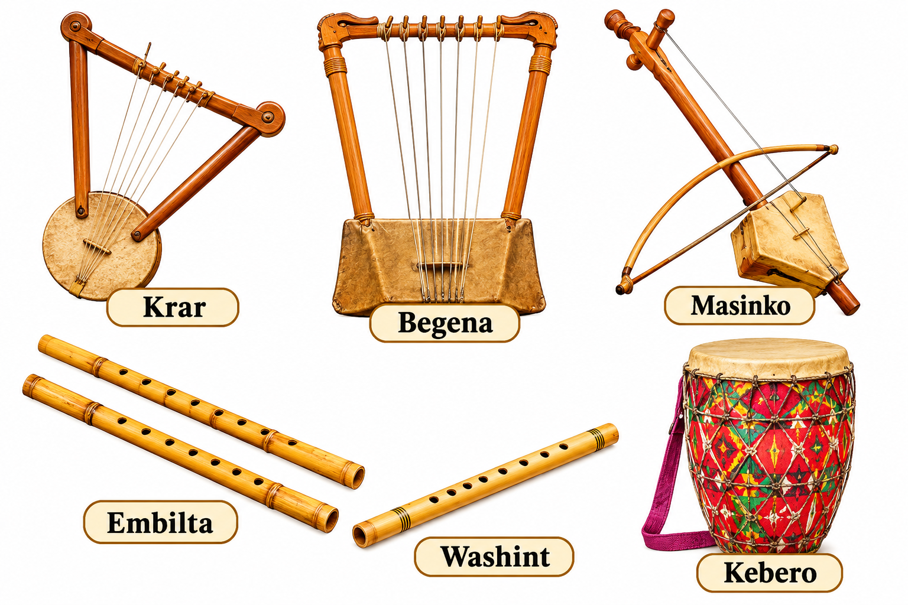

Welcome to Ethiopian Traditional Music
Ethiopia has a rich musical heritage, expressed through traditional instruments such as the Krar, Begena, Masinko, Washint, Embilta, and Kebero. Each instrument has its own design and contributes a different sound to Ethiopian musical traditions.

Explore Traditional Instruments
Explore six traditional instruments and discover their names, features, and cultural importance.
Visit our Instruments page to explore these instruments in detail, or contact us for more information.
The Beauty of Ethiopian Musical Heritage
Traditional Ethiopian music is part of everyday cultural expression. Different instruments are used in celebrations, religious occasions, cultural ceremonies, and community gatherings.
Learning about these instruments helps us appreciate the musical traditions passed between generations.